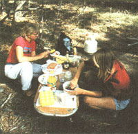
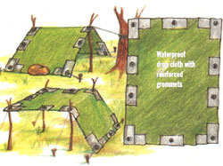
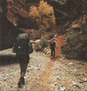
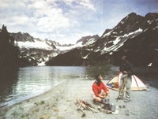
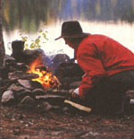
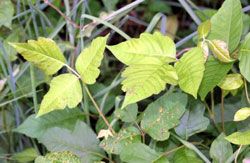

A Tent Away From Home
A guide to hiking and camping, including necessities, packing, clothing, navigation, cooking.
By Chris Koch
October/November 1992
MOTHER'S Guide to hiking and camping.
IT'S ALMOST TOO PAINFUL TO REMEMBER that camping trip last summer, but your family will never let you forget. In the first place, a sleeve of your favorite flannel shirt caught fire and burned to the elbow while you were drying it. Your uncle's heavy old canvas tent you could barely squeeze into sideways leaked so badly that the kids woke up miserable and cold in a swamp of soggy sleeping bags. You painfully recall that unbelievably large blister on your eldest's heel and how it became so badly infected. And thank God that no one sprained an arm or ankle.
And that peak! You were so certain everyone would enjoy the glorious view- if only you had been able to reach it! Once a few miles from campsite, though, your long-range recreational patrol quickly became a portable feast, a mobile buffet for mosquitoes, deer flies, and a variety of oth er noxious blood-suckers. How could you possibly have forgotten the jungle-strength insect repellent? After the kids walked hip deep into that poison ivy and the calamine lotion ran out, even Mom got discouraged. Remember her rash of questions: "Is this really necessary? What was wrong with Disneyland in the first place? Wouldn't reservations at that nice state park we passed have been a better idea?" Come to think of it, you recollect the rest of the fam ily pitching similar heart-felt suggestions at you, intimating that anything was preferable to this ...this camping. Let's face it, your touted organizational skills, so use ful around the house, proved woefully in adequate to the task of wilderness survival. Maybe that call of the wild was a crank.
Yet with each spring and summer, symptoms of camping fever break out. You recognize them by now. You've rented The Bear video for the second time this month because the kids asked to see it again. As you mow the lawn, you find yourself thinking about peaks in the Hindu Kush, shooting white water in the Appalachians, tight-rope walking above emerald ice-melt on cabled monkey-bridges high across some forgotten gorge. A year has done wonderful things for the kids' stamina too, and even your wife has forgotten the worst of the previous year. You begin to imagine that your suggested backpacking proposal might be passed by a healthy margin. The plans you have for a family hike will unfurl and be quickly accepted by all in the spirit of fun and adventure. Dream on.
Fact is, you are not into the woods yet. The good news is some ground work can get you there. And try to keep in mind that there are some excellent reasons for camping in the first place. It's easy. It's cheap, builds skills, and can be comfortably scheduled. Your only real obstacle before venturing is lack of good information about preparation and planning. That can certainly be overcome. Your pursuit of hiking happiness, while not guaranteed, is much more likely to be successful if you remember that, although this is not Everest you are tackling, the outdoors can be tough on the uninitiated. Take it slow and easy. The Grand Tetons aren't going anywhere in a hurry.
Practical Necessities
First, a trip to your local outfitters. Don't panic. Most of what you will need you probably already own. Often, the rest can be borrowed or rented. And if you've been camping before, you have probably geared your family over the years much better than you might imagine.
Each person will need the basics: backpack, rip-stop and non-plastic poncho, day/fanny pack, gators (nylon covers for the leg below the knee), shorts, ankle-supporting, lug-soled, and well broken-in hiking boots, hat, a onequart canteen, bandanna, wool socks, cotton wick socks, long underwear, long loose pants, spoon, bowl with lid, insulated cup, and sleeping bag. A middleweight Qualofil or similar synthetic fiber bag that has a warmth range down to 10°F is best. This size bag will keep you warm throughout the year-with the exception of very late fall through very early spring. You will also need a sleeping pad (to soften the ground underneath you), toothbrush, toothpaste, toilet paper, T-shirt, wool shirt, wool sweater, several large plastic garbage bags, a small flashlight, and hand towel. It's also a good idea to bring whistles in case anyone (especially one of the younger folks) gets separated.
Mom and (or) Dad need to pack other important group items. Make sure these do not get mislaid or mishandled. Parents should pack a first-aid kit containing: snakebite kit, moleskin (a velvety material with adhesive on one side to ease developing blisters), gauze pads and rolls, various Band-Aids, iodine to dress cuts and scratches, Ace bandage for stressed knees or sprained ankles, tweezers to extract bee stingers, tick heads, and splinters, calamine lotion to ease itching, and soap to wash cuts, scrapes and rashes. Before you dash to the store, check the medicine chest. You'll likely discover you already own most of this stuff. Chances are a never-to-be-used snake-bite kit will complete your kit.
All those little necessities you packed will become very weighty after awhile. When in doubt, leave it at
home.
Prepared for the worst, make the best of your family's trail time by packing in these other shared essentials: a tested and functional camp stove, two one-quart aluminum screw-top fuel bottles, light-weight two-quart aluminum sauce pan with lid, pot-handler, fire-starter gel, tent or polyethylene tarpaulin, ground sheet, two-gallon collapsible water container and water purification tablets.
Contact your Avon representative for a bottle of Skin So Soft. It acts as a formidable insect repellent. If you can't get your hands on some, buy some junglestrength liquid insect repellent. Also bring a bundle of parachute cord to hang food, roll of lightweight nylon line, Swiss army knife or equivalent, candle lantern, waterproof matches and lighters. Extras add weight but can make you trip more memorable. Some suggestions: binoculars, bird and wildlife guides, folding saw, campfire story books, sunglasses, camera and a harmonica. NOTE: Some parks outlaw fires and require camp stove use. At other parks, rangers may prohibit your family from progressing beyond certain elevations without the proper footwear and foulweather gear. Bringing the proper equipment will reduce the chances of your ending up on the rangers' endangered list and comfort you in most weather and at most elevations.
Buying a backpack can be confus ing. Choosing one from the endless varieties flooding the market can take some time. Large daypack or small rucksack? Internal or external frame? Stuffsack or zippered compartment design? Neon or natural colored? Expedition size or weekend weight? So many questions, so little experience. It might be better to borrow one for the first trip or two. See how you like it. Ask other hikers about their packs: how convenient the design is, how durable the construction, how commodious, balanced, and waterproof the packs are when jammed full of camp gear? Friends will often make you a weekend loan of their rucksack. If not, rent one from a camping specialty store. You may need to phone around until you find stores that stock used equipment. When you locate one do not be surprised if smaller childrens' sizes are unavailable. No matter. There are plenty of reasonably priced packs that will endure decades of abuse with a few dental floss stitches on those stressed corners.
In addition to a sturdy frame, look for packs with padded hip belts, padded shoulder straps, and cross-chest cinch. Check the stitching. Cheap stitches which loosen when you apply pressure should be a tip-off that the pack is substandard, so don't be afraid to discreetly beat the pack up a bit when shopping. Easy release clasps, adjustable flaps, and punched leather patches on the outside of the bag to strap on ponchos, sleeping pads, or sweaters are all standard features of a good pack. The number of side pockets and compartments, zipper lengths, quality, and type of materials vary widely. External frame packs are usually less expensive and they tend to be easier to strap sleeping bags and other extras onto than internal frame packs. But on a slippery stretch of trail, you may prefer the improved balance offered by an internal frame resting snugly against your spine.
The first rule for outdoor clothing is: Ventilation is the key to staying warm and dry.
Packing It All In
Packing is a marvel, kind of like trying to get all those clowns to fit into a circus car. How will you ever fit all that stuff into one sack? Before you start, consider this: your pack should never weigh more than one-third of your body weight. Less is better and more comfortable. The children will ask if they can bring this or that. They certainly can. But be firm in pointing out that it is they, not you, who will carry it all the way in-and all the way back. An 86 pound pack will be hard to laugh off after a few miles. It is the weight of your world you will be carrying. And unless you weigh-in wisely, your pack will grow heavier each step. So after you read the scale, and realize the amazing number of "necessities" you've stowed that you really don't need, weed them out. Ruthlessly reduce your needs and make do with less.
Garbage bags are great. Their smooth surface makes them ideal to wrap things in and they slide smoothly into the pack. And if you fall backwards off a boulder into a stream, a garbage bag will keep clothes and sleeping bag dry. Use the same bag beneath a punctured ground cloth at night or to keep the ripening sock stench from spreading through the rest of your pack. Before bedding down, use the bag to cover and waterproof your pack so you can leave it outside the tent and have more sleeping room. If you lose your poncho, you can use a bag as an emergency rain coat or wind-breaker. Finally, you can use them as intended to pack out the nondegradable debris you packed in.
Think about what you need access to while you pack. Place your poncho at the top of your pack, or strap it to the outside, ready for use at a moment's notice. Think comfort. Put soft items next to your back. Fifteen minutes of the camp stove or flashlight digging into your kidneys every other step will be about all a body can stand. And make sure the kids do the same. Waterproofed and well-wrapped items like sneakers or ground sheets belong in the basement of your pack. No worries then as you lay it on damp ground during rest stops. The top or outside pouches should hold amenities to meet your immediate needs: map and compass, snack mix, Swiss army knife, canteen, bird book, binoculars, Band-Aids, moleskin, and extra shoe laces.
The Clothes Make The Hike
Now that you're packed, what to wear? Loose, layered clothing that ventilates will keep you both warm and dry when hiking. Excessive perspiring can cause dehydration or cool you down too quickly in rapidly falling temperatures. Shorts, cotton Tshirts or fishnet underwear that wick perspiration away from your skin may seem little to start hiking in, but as you pump up and your body radiator reaches its boiling point, you will be glad you did not overdress. Avoid sweat shirts because they tend to stay damp and clammy. Wool shirts that you can unbutton as you warm up are among the best pieces of warm clothing. A bandanna and hat cover two major heat highways: your neck and head. Remove one or both as you climb for major changes in comfort. Pants, like shorts, should be loose-fitting. Avoid jeans-they cling, often cut off circulation and once wet, never seem to dry out! Lastly, an enjoyable jaunt depends upon quick clothing changes. During rest breaks, make it a habit to slip on a shirt so your muscles won't cool and stiffen. If you want, put on a sweater over your shirt. There's really only one rule for clothing: ventilation is the key to staying warm and dry.
Boots can be your best friend on the trip if you choose them properly. Of course they should be comfortable, but a pair of puffy high-top sneakers will never provide the level of support required for miles of treacherous terrain. Your boots should be as light and strong as possible, with a reinforced toe if you plan to do any kind of rock navigating. A reinforced arch is an absolute must: it will greatly reduce the amount of fatigue on your feet over the course of a few days. Designate one set of trail boots for the duration. It might be tempting to take a few pairs but then you will be burdened with lugging twice as many soggy, very heavy boots back to the car. Your boots will get wet and stay that way. It's great if you can manage to air them at night, or trade wet boots for sneakers or dry camp moccasins at day's end, but on the trail, accept it.
How to Get There ...From Anywhere
With the clothing and climate shields packed away, it's time to prepare your itinerary. Your family's safety depends to a large degree on how well you map the hike. For this purpose, the best maps are topographic. These are printed by the U.S. Geological Survey (USGS). Elevation contours, trails, logging roads, lean-tos, towns, campsites, timberlines, rock faces, fire towers, and creek-crossings are all clearly delineated on these charts. If you do not know where you would like to trek, write the USGS for a map index for the state you want to look over and a guide to reading topographical maps. Both are free and the area grid maps themselves are inexpensive.
While mileage can measure joy or cause morale to plummet, map distance itself is meaningless. Minor detours on the map can devour whole mornings. Trails you had hoped to camp along may skirt a gorge much steeper than you remembered the map indicating. A significant miscalculation may force you to set up in the dark. So, how many miles can you expect to cover in a day? On level ground, one mile per hour-or less-is a safe rule of thumb. Elevation, weather, time of year, your family's stamina are some factors you must consider. Do yourself a favor and get into a little better shape before you go: power walk, ride your bicycle, drop those last few pounds, and you will be better prepared to go the distance. Safe distance is do-able distance.
Map your route carefully. Going the extra mile should be a matter of choice, not necessity for your family. Easy does it. A fun five miles is preferable to a fit-to-be-tied ten. You may cover less ground, but all of you will certainly enjoy it more. Topographic foresight gained at the kitchen table combined with a loose mile-an-hour distance measure and a realistic assessment of your family's abilities will go a long way in keeping your hiking trip from becoming an unpleasant journey through fatigue and into the accidentprone zone.
Try to put most of the uphill push behind you by lunchtime. When mapping, include time for bird watching breaks, bushwhacking, or exploring what appears to be an interesting, if barely noticeable stream. Times of sunrise and sunset are listed in the local paper. Note them. With common sense, one eye on your watch, and the other on the map, you should be able to accurately gauge how long it will take your brood to reach camp, have dinner and gather wood for a campfire. Map one mile per hour of light and remember, easy does it.
Hot to trot is the rule for breakfasts. hitting the trail in cold, wet boots is much easier after a hot meal. .
The Camp Mess Hall
You've now managed to navigate through an entire day, and it's time to thank your fatigued body with some hot food and a warm fire. Here is the only mess kit you will ever need to tempt your stomach outdoors. This durable featherweight kit costs less than three dollars but you will not find it in any store. While some items are free, you will have to gather others. On the trail, you will be glad you did. Convenience store coffee clubs offer deeply discounted insulated "come back" coffee mugs with tight fitting rims. Your all-purpose bowl will be an empty Cool Whip container complete with lid. A strong plastic spoon may cost as much as eighty cents. Forget the knife and fork. Use a cheap two-quart aluminum sauce-pan from K-Mart or your own kitchen collection to boil water. Saw the handle off to save weight. Use a strong thin microwave plate as a lid. If you plan to cook over a fire, you may want to substitute a lightweight pie-tin to cover the pan to keep ashes and other crud out of your water. The pot-handler, a cheap plierlike aluminum tool completes the cook and mess kit. That's it! Congratulations!
On the trail, cooking can be a misnomer. If you can boil water, you are a qualified camp chef. With trail food, as with most things Americans eat, convenience and instant gratification count for a great deal. Instant soup, instant coffee, instant oatmeal-you get the idea. Just add boiled water, let it sit, soak, and reconstitute into edible shape. As soon as you pour boiling water into your bowl of oatmeal, soup or rehydrating trail entree, put a lid on it. Lids lock in the heat while foods bulk up or dissolve. Want to shut down the stove but be sure your morning cup of coffee is still warm by the time you return from doing your biological business at the biffy? Put a lid on it. Is some gravitydefying process perpetually sending shreds of boot-bottomed camp muck and twig pieces into the dinner bowl? Lids will leave these dietary supplements underfoot where they belong.
If you feel compelled to actually cook, stir a pot of thickening stew or bake biscuits, please do so. With meals like these, be sure to take two full quarts of fuel for a weekend trek. You may not use it all, but better safe than hungry. Minute rice and Ramen noodles are good examples of short stir items that save precious fuel and reduce time waiting for water to boil over smoldering embers. As you gain experience, you may become adept at and enjoy Dutch oven baking. But for our purposes, cooking should be quick and easy.
Hot to trot is the rule for breakfasts. Hitting the trail in cold wet boots is somehow easier after a warm breakfast. Instant oatmeal is compact and very popular. Variety packs flavored with dehydrated fruit are a big hiker's favorite. And the packaging can be used later as fire starter. Hot instant milk over Grapenuts will also stick with you all morning. Dried apples, raisins, or bananas are a tasty supplement to both cereals and can be snacked on later by themselves.
At noon, soup warms as well as rehydrates you. Tinned or vacuum-packed meats and cheeses round out a hearty lunch. Crackers tend to crumble, so bring pita bread, English muffins or rye bread squares instead. Leave the jars home if you bring coffee, peanut butter, jelly, sugar or honey. Empty them into lightweight plastic squeeze tubes before you pack them away. These widely available inexpensive dispensers make for clean and easy trailside dining. Don't leave home without them!
Snack for quick energy. While more complex carbohydrates and healthier snack foods like dried apricots, granola, apple chips, and raisins sustain you for the longer haul, candy bars and chocolate kisses may be just the thing to energize the children. Gorp, a trail mix of nuts, baked oats, honey, carob chips, and any other delectables can be made at home before you go. Or you can buy bulk mixes from your neighborhood market or health food outlet. Supper should be simple, no fuss, and a quick clean up. Forget at least five out of the seven courses and leave time to roast marshmallows for dessert or enjoy a second cup of cocoa by the campfire. Almost anything tastes great after a day on the trail. And don't forget that old standby, the military C-ration. They are fairly cheap and offer quite a variety of tastes. Warm the C-ration pouch in hot water and eat it straight from the package. It tastes even better added to a bowl of hot Ramen noodles. Other no-cook entrees are usually more expensive but taste even better. Simply snip open the heat-retaining foil pouches, add boiling water, reseal the top and let stew for ten minutes to its full flavor and bulk. Sprinkle on some Cajun seasoning if you like and enjoy.
Clean-up becomes a snap, literally. Biodegradable detergent? Who needs it? If you use what we have discovered to be the laziest and quickest way to clean dishes, you, will save time, money and soap. Immediately after eating: spoon food remains into the fireplace. Dash boiling water into the bowl or cup. Snap the lid into place. Take care to hold the lidded bowl with both hands at arm's length. Keep your wrists together. Shake vigorously for a minute. Unhand part of the rim if the lid vents so the hot rinse will spurt away from you. Do the same with cups. Dump. Repeat as often as you feel the need to. Your sparkling utensils will air dry in less than thirty seconds. With practice, your mess kits will look like they just came out of dishwasher. Now sharpen your Pen cil. Let's see: two days times three meals times four people equals...
Quenching Your Thirst
Water is the most basic menu item, and words you should always remamber are: purity it. Potable water call no longer be taken for granted just because you are in the wilds. State parks have been deluged by campers, many of whom don't know about or don't respect proper water treatment. Gardia and other microbes, dirty water from upstream, and unburied human Waste call cause unpleasant intestinal surprises for those further down stream.
In the past, the rule might have been: the higher up and farther out you go, the cleaner and safer the drinking water will be. But now, safeguard you health by purifying all the water you drink. Though ex pensive, bulky but excellent and highly effective lactic water filtration devices are on the market. Carry one if you like but in most instances, iodine tablets will suffice Cheap, compact, and effective staples in most camp stores, one tablet per quart is all you need. Ten minutes later, quench your thirst. One terrible tasting sip will tell you why you brought along packets of Wyler's , lemonade or Crystal Light! Other "iodine masks" of choice might include instant ice tea or even kool And (if the kids want to pack in the extra sugar).
One trip to the river with a collapsible two-gallon water container and a couple of canteens should do for your cooking and washing needs for the evening. Take water as far from the shore as you can, where it is most active and roiled. Add the requisite number of iodine pellets. More serious water contamination will require boiling iodized water. Check with the park ranger for information on local water quality. As the grunge-factor grows you may want to soap down or shampoo your hair. Respect the water supply. Rinse off on land, away from the water source. Give those detergents time and distance to break down and disseminate before they filter back into the stream and are used by some downstream camper to brew his morning coffee.
Home Away From Home
Choosing your menu will be easier than setting up camp. The perfect camp compliments nature by its economy and sufficiency. Regardless of where or how frequently you rest and refresh yourself, whether your tent is a poly pup or the last word in alpine design, your appreciation of great campsites evolves as you grow in experience. They come to symbolize all that works well, all that is really needed and right with the world and with you.
First, think tents. Feel you can't afford a brand name family size tent that will stand up through an avalanche, weigh eleven pounds, and cost you a week's wages? Here's an economical and lightweight solution. This tent will cost you less than twenty dollars, weigh less than five pounds, and keep eight people and their gear dry in a downpour.
The catch is, it takes a half an hour to make. Here's how: at the hardware store, buy a 4 millimeter thick, 18 by 20 foot, prepackaged polyethylene sheet, one roll of duct tape, a ball of nylon line, and a grommet kit. Slit the large sheet into two equal sized smaller sheets. Reinforce all corners and at equal intervals, reinforce the edges with duct tape top and bottom. Pound grommets through the duct taped pieces and your tent, dining fly, or lean-to is done. Designate one sheet the ground cloth which is more likely to be punctured. Electrical tape is handy for patching. Use the other sheet for the dome. Mom carries one, Dad the other. With no poles or tent pegs to lose, the tent can be set in any number of configurations. Experiment with it or pitch it between any two trees and weigh down the edges with rocks. While high winds can be of some concern, the tent will hold up quite well in most foul weather and give you years of use. In short, it does the job and the price is right.
Recognizing what makes a good campsite can be more difficult than making a tent. Here are some pointers. Set up camp near running water but not close enough to be swept away if the creek rises. Flat ground may look ideal at first, but may also become a huge puddle, so check drainage. If home is where the hearth is, you will need a tall clearing so sparks from your campfire won't ignite the trees. Fix the prevailing winds with a wet-finger test before you pitch your tent. Face the tent's opening upwind of the fire to keep smoke banshees from spending the night with you. A lean-to, or dining-fly should be crosswind to the breeze and rain.
Settled in camp, biological business may be next on the agenda. When available, pollution control by strict outhouse use is very important. When you must improvise a rest stop, make sure that the facilities are at least two hundred feet from any running water. Backfill over your waste and bury it completely when you move on. The essence of low impact camping is expressed by the words: Leave it better than you found it. Burn stray litter carelessly left by previous campers. When you break camp in the morning, make it seem like you were never there.
Warming Your Bones
Campfire time. Just after you pitch camp, start collecting wood. Darkness sneaks up on you when you are settling in and will make finding dry branches much more difficult. Ask park rangers when you log in for their regional fire policy. Obey it. Your family's lives could be at stake. Build your fireplace in a tall and wide clearing on hard ground, not loam. Underground fires have been known to burrow for weeks before bursting into flame far from where they started, and sparks can leap long distances and ignite dry underbrush. Start small with tinder and add kindling, building up the fire gradually to include larger logs and pieces while being careful not to smother it. While gathering wood remem ber: if it doesn't snap, don't burn it. There is nothing so unpleasant, offensive, and dispiriting as a fire smoldering away under green and rotting wood. Build a trench, tepee, log-cabin or back-log fire depending on whether you want to cook on it, dry out around it, or simply bask in its radiant glow. But remember, the fire is not out until you put the fire out. Drown it, dissemble it, stomp and grind every last piece of it into cold and sodden ash. It's never a bad idea to double-check before bedtime too.
When the fire's safely out, everyone should be eager to start down the road to dreamland. As you turn in, the stars come out. Together with your family on these trails, you hear the wind as if for the first time; hear one another again perhaps for the first time in a very long while. The children's pride of accomplishment and their marvel of the day's events fold together in a warm feeling in your chest. Your hands unfold as you loosen your grip and let the day go. In alpine meadows you stopped to listen to your son name the cloud beasts above. Your wife waved from a waterfall and you saw her smile. Nearby, your daughter stooped and you both lost yourselves in the law, beauty and stunning complexity of a leaf. These moments will remind you of why you came.
A good rule for fires is: If it doesn't snap, don't burn it There's nothing dispiriting as watching a fire smolder under green and rotting wood.
Trail Etiquette
Travel lightly on the land. Stay on the trails in peak areas where the fragile Alpine biosphere can be kicked apart and torn from its rock bed. Litter should leave with you. Papers, banana,and orange peels add nothing to the beauty of a mountain top. Start fires only in existing fireplaces. Burn all your cans, flatten them, and pack them out. Only dead and down wood should be used for fires. Scavenge and assault standing deadwood only as a desperate last resort. Forget a sleeping mattress of fresh cut pine boughs. Leave the trees be and bring a pad. Use established campsites whenever possible and leave no mark on the land. Relieve or wash yourself, burying waste and washing with biodegradable soap at least 200 feet from water. When hiking, if others are in a hurry, or coming at you on the trail, stand aside so they may pass. Kindness to the land and courtesy towards your companions is the rule.
Camping Out In 1900
By Robert G.Koch
Like many other campers, we have accumulated and replaced camping gear over the years, but I wondered how much it would have cost to start out as a neophyte camper in about 1900, using the Sears, Roebuck & Co. catalogue.
Today we have a lightweight umbrella tent with screen door, window, and roof, which is covered with a lightweight fly. Complete with plastic flexible ribs and wire stakes, the tent weighs no more than the Sears catalogue. In 1900 we might have ordered, say, a 7'x7' wall tent of 10-oz. canvas for about $5, plus $2 extra for a fly. With poles and stakes, the tent would have weighed about 40 pounds.
As new campers we would have been attentive to Sears' advice: "Do not drive the pegs straight, but angling; they hold very much better in this way. The tent being now up and guys all adjusted so they bear equal strain, then proceed to dig a V-shaped trench all around the tent, about three inches deep; this will insure you a dry floor at all times." Even with a moat we probably would have worried. Today, our lightweight sleeping bags rest on a compressed foam rubber mattress enveloped in a waterproof zippered bag, on a waterproof floor. In 1900, however, we might have opted for a "fleece lined blanket ...made of the very best rubber ...gotten up especially for hunters and prospectors who are compelled to sleep on the damp ground:" Ominously, no weight is listed, but add $2.75 to the cost. For colder weather, an arctic sleeping bag, weighing 20 pounds and costing $12. In any case we would have passed rip the U.S. folding cots, which weighed 15 pounds each.
Today, we have two string hammocks which are fist-size when folded. We mount them between trees, so in 1900 we would doubtless have had to choose a "Mexican woven hammock, made of sisal twine, fancy assorted colors" weighing about three pounds, but costing only 80 cents.
For cooking and other camping tasks, we would have chosen from pages of equipment all from a supply company which modestly called itself "the Cheapest Supply House on Earth:" A jack knife, or Dick's hand-fitting easy opener pocket knife, would have set us back about 50 cents. Other cutlery-bread knife, kitchen fork, paring and general kitchen knives-cost about a dime each, while the fish scaling knife cost 25 cents. For a buck we could have bought Japanned tin box to keep the squirrels and birds from ap propriating our food supplies. Given our lack of experience we would probably have settled for Wilson's camp kook kit. "Just the thing for camping out. 53 pieces. Fire jack, two boilers, fry pan, coffee pot and all utensils and tableware for a party of six. The entire kit nests in shall space. and can be firmly locked up by ordinary padlock." $5.75, weighs 20 pounds. And we would have also bought a cedar water pail, 2 1/2 pounds, 17 cents.
We'd have cooked over wood or charcoal rather than our current propane two-burner, but we could have made mealtime a brave and joyous occasion by blowing a large dinner horn, more than a foot long, japanned, and with all improved mouthpiece, for a nickel. For evening entertain ment we would certainly have chosen a harmonica, avail able for a dime to a dollar; although it may have been difficult to pass up "Koch's Concert Bell harmonica, 40 reeds, 10 double holes. Full concert harmonica of powerful tone (and with) bells...of good quality, well made and sup plied with strong, durable strikers, producing a really sweet and musical ring." All that costs 70 cents plus 8 cents postage. For rhythm we could have thrown in solid ebony bones for a quarter. Or we might have wanted to read or play cards under the reassuring glow of Ham's Cold Blast 'Tubular Lantern, "...made on the same principle as a street lamp, with wind break. Very desirable for use in places where there are strong drafts of wind." Weight: 2 1/4 pounds; 80 cents.
We would have brought our clothes from home but might have thrown in an extra poncho for $1.25. Weight 3 1/2 pounds. We might also have ordered new bathing suits for the occasion. Mine would have been a "one-piece best cotton bathing suit. made like a Union Suit (with buttons in front). It is like an ordinary shirt and knee pants, but all in one piece" available in solid dark colors or horizontal stripes, for $1.00. "The Ladies' Union Suit with skirt ...navy blue cotton fabric, with sailor collar, blouse effect with collar and skirt trimmed with white braid" for $2.50, or in a racier model with V shape front, for a dollar more. My rod and reel would have set me back about $6.00, for which sum we could have bought three kites for more assured beach fun.
All told slur camp gear would have cost us about $35 plus shipping, (perhaps a month's wages), but it would certainly have weighed well over a hundred pounds!
Leaves of Three, Let It Be
Poison ivy, poison oak, and poison sumac all contain allergy producing oleoresins in their oily sap. While poison ivy is found in all 50 states, poison oak is common on the West Coast, and poison sumac is primarily native to the southeast. Reaction to the resin can vary from apparent immunity to itching, rashes, blisters, and oozing sores. Scratching will relieve the condition for only a few seconds and can increase the risk of infection. Calamine lotion may relieve itching.
Sap takes from 20 minutes to five hours to penetrate into the skin, so if you think you have brushed against a poisonous plant, wash immediately. Water alone may often be enough. Also, wash any clothes that have come into contact with these plants because the resin stays active for months.
Identification
Poison Ivy: Vine or, more commonly, small shrub with clusters of three leaves that are shiny or dull, with edges that are notched or smooth. Toward the end of summer, white berry clusters form at the plant's base.
Poison Oak: Shrub or small tree with three-leaf clusters and more smoothly notched leaf edges. Downy hair covers the entire plant and yellow berries form in very early autumn.
Poison Sumac: Tall, thin woody plant prevalent in soggy areas, with seven to 13 leaves per cluster, including the three at each tip. It has off-white berries.
 PHOTOGRAPH ? WILLEY-WALES/ADVENTURE PHOTO |
 By Susan Scanlon |
 By J.A. KRAULIS/MASTERFILE |
|
 PHOTOGRAPH ? EDWARD M. GIFFORD/MASTERFILE |
 WILEY-WALES/ ADVENTURE PHOTO |
 |
|
 |
|
|